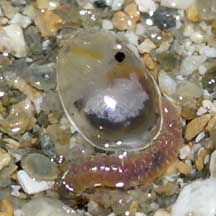
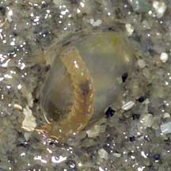

|
|
| other crustaceans text index | photo index |
| Phylum Arthropoda > Subphylum Crustacea > Class Ostracoda |
| Mussel
shrimps Class Ostracoda updated Mar 2020 Where seen? Often seen on our Northern shores, usually only by the bioluminescence they produce. What are mussel shrimps? They are crustaceans like crabs and prawns. But while crabs and prawns belong to Class Malacostraca, Order Decapoda, mussel shrimps belong to Class Ostracoda. These tiny animals are poorly known. They are also sometimes called seed shrimps. Features: 0.1-0.5cm. The body is enclosed in a two-part, hinged, hard translucent 'shell', somewhat like a clam. The shell is shed with each moult. It usually has a pair of long and hairy antennae. The antennae are used for swimming, crawling or burrowing. Some can produce a blue luminous light when disturbed. And some use the bioluminescence to signal to mates, much as fireflies do. In WWII, they were collected, ground up and used as a light source by Japanese soldiers. What do they eat? The various species may be filter feeders, herbivores, predators and scavengers. |
 Eating or being eaten by a worm? Pulau Sekudu, Aug 05 |
 Again seen with a worm. Chek Jawa, Jul 05 |
|
Links
References
|